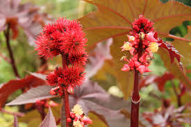
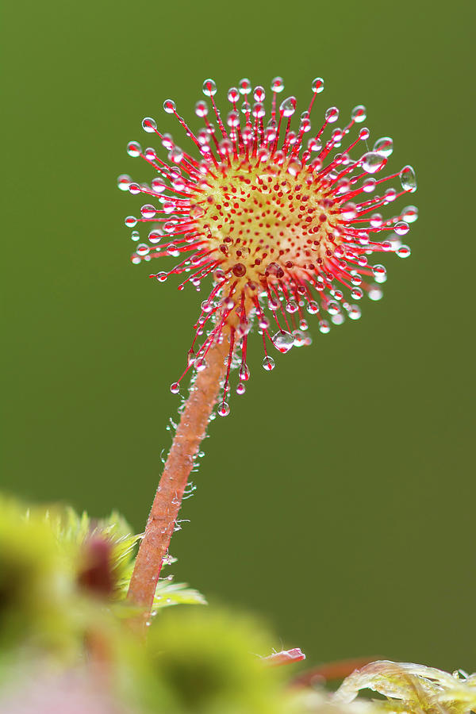
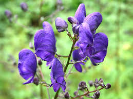
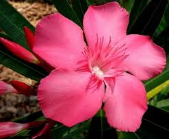
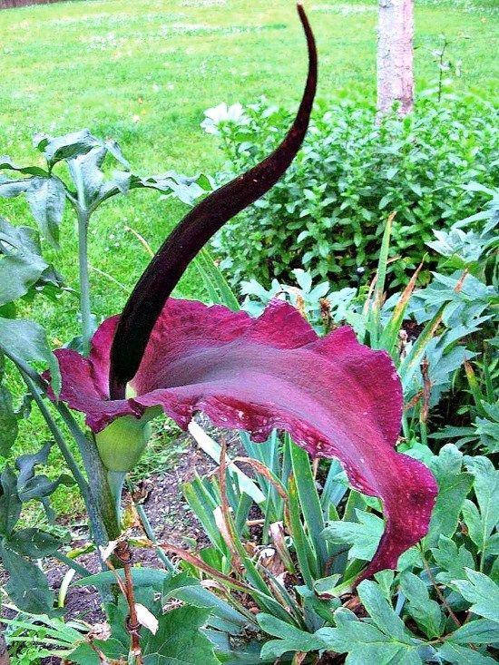

| # | Flowers | Images | Description |
|---|---|---|---|
| 1 | Castor oil plant “Palm of Christ” |  | Castor seed is the source of castor oil, which has a wide variety of uses. The seeds contain between 40% and 60% oil that is rich in triglycerides, mainly ricinolein. The seed also contains ricin, a water-soluble toxin, which is also present in lower concentrations throughout the plant. |
| 2 | The poison queen |  | Charles Darwin performed much of the early research into Drosera, engaging in a long series of experiments with Drosera rotundifolia which were the first to confirm carnivory in plants.[3] In an 1860 letter, Darwin wrote, “…at the present moment, I care more about Drosera than the origin of all the species in the world. |
| 3 | Sweetly scented killer |  | The dark green leaves of Aconitum species lack stipules. They are palmate or deeply palmately lobed with five to seven segments. Each segment again is trilobed with coarse sharp teeth. The leaves have a spiral (alternate) arrangement. The lower leaves have long petioles. |
| 4 | Dracula’s flower “Voodoo lily” |  | The species' anti-diabetic qualities yielded the name Sakayau and Kashe Zaki meaning "sweet killer" or "destroying sweetness" in the Hausa language used in Northern Nigeria. |
| 5 | Round leaved Sundew “Drosera rotundifolia” |  | Charles Darwin performed much of the early research into Drosera, engaging in a long series of experiments with Drosera rotundifolia which were the first to confirm carnivory in plants.[3] In an 1860 letter, Darwin wrote, “…at the present moment, I care more about Drosera than the origin of all the species in the world.” |